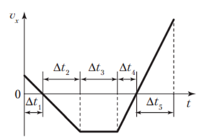
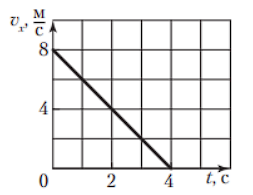
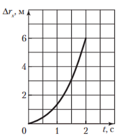
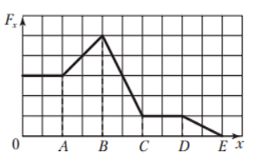
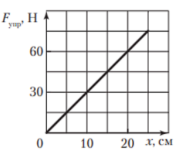
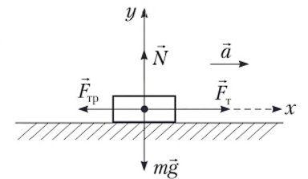
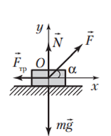
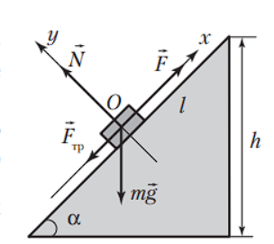
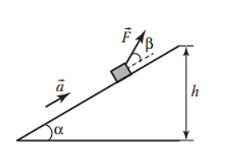
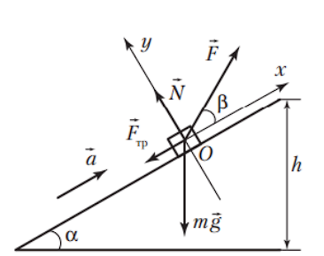

ДЗ
Работа. Мощность
Выберите вариант ответа или введите полученное числовое значение.
Задача 1
Шайба массой $m = 200\text{ г}$ скользит по горизонтальной поверхности льда. Коэффициент трения между шайбой и льдом $\mu = 0,10$. Если силой трения, действующей на шайбу, совершена работа $A_{\text{тр}} = -10\text{ Дж}$, то модуль перемещения $\Delta r$ шайбы равен:
Решение:
Работа силы трения, действующая на шайбу, $A = F_{\text{тр}}\Delta r\cos 180^\circ$. Модуль силы трения $F_{\text{тр}} = \mu mg$. Из записанных уравнений найдем ответ: $\Delta r = 50\text{ м}$.
Задача 2
Санки с сидящей на них девочкой равномерно тянут по горизонтальной поверхности снега с помощью легкой веревки, которая образует с вертикалью угол $\alpha = 30^\circ$. Модуль силы натяжения веревки $F = 80\text{ Н}$. Если модуль перемещения санок $\Delta r = 60\text{ м}$, то силой натяжения веревки совершена работа $A$, равная:
Решение:
Работа силы натяжения веревки $A = F\Delta r\cos(90^\circ - \alpha) = 2,4\text{ кДж}$.
Задача 3
Груз массой $m = 1\text{ кг}$ из состояния покоя с помощью невесомой веревки подняли вертикально вверх с постоянным ускорением, модуль которого $a = 2\text{ }\frac{\text{м}}{\text{с}^2}$. Если силой натяжения веревки совершена работа $A = 48\text{ Дж}$, то груз поднимали в течение промежутка времени $\Delta t$, равного:
Решение:
Силой натяжения веревки совершена работа $A = F_{\text{н}}h$. Из второго закона Ньютона следует: $F_{\text{н}} - mg = ma$. Высота, на которую за время $\Delta t$ подняли груз, $h = \frac{a\Delta t^2}{2}$. Из записанных уравнений найдем ответ: $\Delta t = 2\text{ с}$.
Задача 4
Материальная точка движется вдоль оси $Ox$. Если график зависимости проекции ее скорости $\upsilon_x$ на эту ось от времени $t$ имеет вид, представленный на рисунке 98, то работа $A$ равнодействующей всех сил, приложенных к этой точке, положительна в течение промежутка(-ов) времени:

Решение:
В течение промежутков времени $\Delta t_1$ и $\Delta t_2$ проекции равнодействующих сил на ось $Ox$ отрицательны, а в течение промежутков времени $\Delta t_4$ и $\Delta t_5$ — положительны. Проекции перемещений положительны на промежутках времени $\Delta t_1$, $\Delta t_5$ и отрицательны на остальных промежутках времени. Если проекция силы и проекция перемещения совпадают по знаку, то работа этой силы положительна. Поэтому работа равнодействующей всех сил, приложенных к материальной точке, положительна в течение промежутков времени $\Delta t_2$ и $\Delta t_5$.
Задача 5
Тело массой $m = 8,0\text{ кг}$ движется вдоль горизонтальной координатной оси $Ox$ под действием горизонтально направленной силы тяги, модуль которой $F = 34\text{ Н}$. Зависимость проекции скорости $\upsilon_x$ движения тела от времени $t$ имеет вид $\upsilon_x = A + Bt$, где $A = 5,0\text{ }\frac{\text{м}}{\text{с}}$, $B = 4,0\text{ }\frac{\text{м}}{\text{с}^2}$. Если силой трения, действующей на тело, совершена работа $A = -40\text{ Дж}$, то модуль перемещения $\Delta r$ тела равен:
Решение:
Из второго закона Ньютона найдем модуль силы трения: $F_{\text{тр}} = F - ma$, где $a = B = 4,0\text{ }\frac{\text{м}}{\text{с}^2}$. Работа силы трения $A = -F_{\text{тр}}\Delta r$. Из записанных уравнений найдем ответ: $\Delta r = 20\text{ м}$.
Задача 6
Тело массой $m = 50\text{ г}$ движется по горизонтальной поверхности вдоль координатной оси $Ox$ под действием силы трения. На рисунке 99 представлен график зависимости проекции скорости $\upsilon_x$ движения тела от времени $t$. Работа $A$ силы трения за промежуток времени $\Delta t = 4,0\text{ с}$ равна:

Решение:
В соответствии с графиком (рис. 99) проекция ускорения тела $a_x = -2\text{ }\frac{\text{м}}{\text{с}^2}$. Модуль силы трения $F_{\text{тр}} = ma$. Проекция перемещения тела численно равна площади под данным графиком: $\Delta r_x = 16\text{ м}$. Работа силы трения $A = -F_{\text{тр}}\Delta r = -1,6\text{ Дж}$.
Задача 7
Брусок массой $m = 500\text{ г}$ движется вдоль горизонтальной координатной оси $Ox$. Зависимость его координаты $x$ от времени $t$ имеет вид $x = A + Bt + Ct^2$, где $A = 4,0\text{ м}$, $B = 1,0\text{ }\frac{\text{м}}{\text{с}}$ и $C = 2,0\text{ }\frac{\text{м}}{\text{с}^2}$. Если на брусок действует сила трения, модуль которой $F_{\text{тр}} = 1,0\text{ Н}$, то за промежуток времени $\Delta t = 3,0\text{ с}$ (считая от начала отсчета времени) горизонтальной силой тяги, действующей на брусок, совершена работа $A$, равная:
Решение:
Работа силы тяги $A = F\Delta r$, где $F$ — модуль силы тяги, $\Delta r$ — модуль перемещения. На основании второго закона Ньютона $F - F_{\text{тр}} = ma$, где $a = 2C = 4\text{ }\frac{\text{м}}{\text{с}^2}$ — модуль ускорения. Модуль перемещения $\Delta r = \upsilon_0\Delta t + \frac{a\Delta t^2}{2}$, где $\upsilon_0 = B = 1\text{ }\frac{\text{м}}{\text{с}}$ — модуль начальной скорости движения. Из записанных уравнений найдем ответ: $A = 63\text{ Дж}$.
Задача 8
Тело массой $m = 1,5\text{ кг}$ движется равноускоренно по горизонтальной поверхности вдоль координатной оси $Ox$ под действием горизонтальной силы, модуль которой $F = 5,0\text{ Н}$. На рисунке 100 показан график зависимости проекции перемещения тела $\Delta r_x$ от времени $t$ его движения. Начальная скорость тела равна нулю. Если модуль перемещения тела $\Delta r = 6,0\text{ м}$, то работа $A$, совершенная силой трения, равна:

Решение:
Используя данные графика (рис. 100), определим модуль ускорения тела: $a = \frac{2\Delta r_x}{t^2} = 3\text{ }\frac{\text{м}}{\text{с}^2}$, где $t = 2\text{ с}$, $\Delta r_x = 6\text{ м}$. Из второго закона Ньютона найдем модуль силы трения: $F_{\text{тр}} = F - ma$. Работа, совершенная силой трения, $A = -F_{\text{тр}}\Delta r = -3,0\text{ Дж}$.
Задача 9
Материальная точка движется вдоль оси $Ox$ под действием силы $\vec{F}$. График зависимости проекции силы $F_x$ на ось $Ox$ от координаты $x$ этой точки имеет вид, изображенный на рисунке 101. Наибольшую работу $A_{\max}$ сила $\vec{F}$ совершила на участке:

Решение:
Так как работа, совершенная силой $\vec{F}$, численно равна площади под графиком $F_x(x)$ (рис. 101), то наибольшая работа этой силой совершена на участке $AB$.
Задача 10
На рисунке 102 представлен график зависимости модуля силы упругости $F_{\text{упр}}$, возникающей в деформированном упругом жгуте, от абсолютного удлинения $x$ жгута. Если удлинение жгута увеличить от $x_1 = 10\text{ см}$ до $x_2 = 20\text{ см}$, то работа $A_{\text{упр}}$, выполненная силой упругости, будет равна:

Решение:
Из графика (рис. 102) следует, что при деформациях жгута $x_1$ и $x_2$ модуль силы упругости $F_{\text{упр}1} = 30\text{ Н}$ и $F_{\text{упр}2} = 60\text{ Н}$ соответственно. Модуль работы силы упругости найдем, воспользовавшись графическим методом: $|A_{\text{упр}}| = \frac{F_{\text{упр}1} + F_{\text{упр}2}}{2}(x_2 - x_1) = 4,5\text{ Дж}$. Учитывая направление силы упругости, найдем ответ:
$$A_{\text{упр}} = -4,5\text{ Дж}.$$
Задача 11
Брусок массой $m = 800\text{ г}$ покоится на горизонтальной поверхности. К нему прикреплена легкая пружина жесткостью $k = 20\text{ }\frac{\text{Н}}{\text{м}}$. Если коэффициент трения между бруском и поверхностью $\mu = 0,20$, то для того чтобы сдвинуть с места брусок, растягивая пружину в горизонтальном направлении, надо совершить минимальную работу $A$, равную:
Решение:
Чтобы брусок начал двигаться, на него должна подействовать сила упругости растянутой пружины. При этом должно выполняться равенство $\mu mg = k\Delta l$, где $\Delta l$ — удлинение пружины. Минимальная работа, которую надо совершить, равна изменению потенциальной энергии пружины: $A = \frac{k(\Delta l)^2}{2} - 0$. Из записанных уравнений найдем ответ:
$$A = \frac{(\mu mg)^2}{2k} = 64\text{ мДж}.$$
Задача 12
Модуль силы тяги двигателя равномерно летящего самолета $F = 400\text{ кН}$. Если мощность двигателей самолета $P = 96,0\text{ МВт}$, то модуль скорости $\upsilon$ полета самолета равен:
Решение:
Модуль скорости движения самолета:
$$\upsilon = \frac{P}{F} = 240\text{ }\frac{\text{м}}{\text{с}}.$$
Задача 13
По горизонтальной поверхности вдоль координатной оси $Ox$ движется тело под действием горизонтальной силы тяги, модуль которой $F = 30\text{ Н}$. Зависимость проекции перемещения $\Delta r_x$ от времени $t$ имеет вид $\Delta r_x = At^2 + Bt$, где $A = 1,0\text{ }\frac{\text{м}}{\text{с}^2}$, $B = 2,0\text{ }\frac{\text{м}}{\text{с}}$. Если модуль перемещения тела $\Delta r = 15\text{ м}$, то средняя мощность $\langle P\rangle$ силы тяги при этом перемещении равна:
Решение:
Из уравнения $\Delta r_x = At^2 + Bt$ следует, что перемещение $\Delta\vec{r}$ ($\Delta r = 15\text{ м}$) тело совершило за время $t = 3\text{ с}$. Зная модуль средней скорости перемещения $\langle\upsilon\rangle = \frac{\Delta r}{t}$, найдем среднюю мощность силы тяги:
$$\langle P\rangle = F\langle\upsilon\rangle = 0,15\text{ кВт}.$$
Задача 14
Автомобиль массой $m = 3,0\text{ т}$ достигает скорости, модуль которой $\upsilon = 72\text{ }\frac{\text{км}}{\text{ч}}$, пройдя расстояние $s = 0,50\text{ км}$. Коэффициент трения $\mu = 0,010$. Работа $A$, которую совершает при этом двигатель автомобиля, равна:
Решение:
Работу двигателя найдем по формуле $A = F_{\text{т}}s$. Для нахождения силы тяги воспользуемся основным уравнением динамики. На автомобиль действуют сила тяги $\vec{F}_{\text{т}}$, сила тяжести $m\vec{g}$, сила нормальной реакции $\vec{N}$ и сила трения $\vec{F}_{\text{тр}}$ (рис. 1.101):
Искомая работа:
$$m\vec{a} = \vec{F}_{\text{т}} + \vec{F}_{\text{тр}} + m\vec{g} + \vec{N}.$$
В проекциях на оси $Ox$ и $Oy$:
$$ma = F_{\text{т}} - F_{\text{тр}},\text{ откуда } F_{\text{т}} = ma + F_{\text{тр}};$$
$$0 = N - mg;\; N = mg.$$
Так как $F_{\text{тр}} = \mu N$, то $F_{\text{тр}} = \mu mg$. Тогда
$$F_{\text{т}} = ma + \mu mg = m(a + \mu g).$$
Для нахождения ускорения автомобиля воспользуемся кинематическим уравнением $\upsilon^2 - \upsilon_0^2 = 2as$, откуда $a = \frac{\upsilon^2}{2s}$ и $F_{\text{т}} = m\left(\frac{\upsilon^2}{2s} + \mu g\right)$.Искомая работа:
$$A = \frac{m}{2}(\upsilon^2 + 2\mu gs) = \frac{3,0\cdot 10^3\text{ кг}}{2}\left(20^2\text{ }\frac{\text{м}^2}{\text{с}^2} + 2\cdot 0,010\cdot 9,8\text{ }\frac{\text{м}}{\text{с}^2}\cdot 0,50\cdot 10^3\text{ м}\right) = 7,5\cdot 10^5\text{ Дж}.$$

Задача 15
На горизонтальном участке пути длиной $s = 250\text{ м}$ модуль скорости поезда массой $m = 800\text{ т}$ увеличился от $\upsilon_1 = 10\text{ }\frac{\text{м}}{\text{с}}$ до $\upsilon_2 = 15\text{ }\frac{\text{м}}{\text{с}}$. Если отношение модуля силы сопротивления к модулю силы тяжести, действующих на поезд, $\frac{F_{\text{c}}}{mg} = 0,050$, то средняя мощность $\langle P\rangle$, развиваемая силой тяги поезда за время разгона, равна:
Решение:
Средняя мощность силы тяги $\langle P\rangle = F\cdot\frac{\upsilon_1 + \upsilon_2}{2}$. Из второго закона Ньютона следует: $F = F_{\text{c}} + ma$, где $F_{\text{c}} = 0,050mg$. Модуль ускорения $a = \frac{\upsilon_2^2 - \upsilon_1^2}{2s}$. Из записанных уравнений найдем ответ:
$$\langle P\rangle = 7,5\text{ МВт}.$$
Задача 16
Вертолет, масса которого $m = 6,0\text{ т}$, равномерно поднимается на высоту $h = 40\text{ м}$ за промежуток времени $\Delta t = 15\text{ с}$. Если двигатель вертолета потребляет мощность $P = 500\text{ кВт}$, то его коэффициент полезного действия $\eta$ равен:
Решение:
КПД двигателя вертолета:
$$\eta = \frac{mgh}{P\Delta t}\cdot 100\% = 32\%.$$
Задача 17
КПД двигателя квадрокоптера массой $m = 4,0\text{ кг}$ при горизонтальном полете со скоростью, модуль которой $\upsilon = 10\text{ }\frac{\text{м}}{\text{с}}$, составляет $\eta = 80\text{ }\%$. Если отношение модуля подъемной силы квадрокоптера к модулю силы лобового сопротивления $\frac{F_{\text{п}}}{F_{\text{с}}} = 5$, то мощность $P$ его двигателя составляет:
Решение:
КПД двигателя квадрокоптера $\eta = \frac{F\upsilon}{P}\cdot 100\%$, где $F$ — модуль его силы тяги. При равномерном горизонтальном полете квадрокоптера $F = F_{\text{с}}$ и $F_{\text{п}} = mg$. Учитывая, что $F_{\text{п}} = 5F_{\text{с}}$, из записанных уравнений найдем ответ:
$$P = \frac{mg\upsilon}{5\eta}\cdot 100\% = 0,10\text{ кВт}.$$
Задача 18
Тело массой $m = 4,2\text{ кг}$ скользит с постоянной скоростью по горизонтальной поверхности под действием горизонтально направленной силы $\vec{F}$. Коэффициент трения тела о плоскость $\mu = 0,10$. Если силой $\vec{F}$ совершена работа $A = 105\text{ Дж}$, то модуль перемещения $\Delta r$ тела равен ... м.
Решение:
Работа $A = F\Delta r$. Из второго закона Ньютона следует: $F - F_{\text{тр}} = 0$. Модуль силы трения $F_{\text{тр}} = \mu mg$. Из записанных уравнений найдем ответ:
$$\Delta r = \frac{A}{\mu mg} = 25\text{ м}.$$
Задача 19
Лошадь тянет груженые сани массой $m = 200\text{ кг}$ с постоянной скоростью, модуль которой $\upsilon = 7,2\text{ }\frac{\text{км}}{\text{ч}}$, в течение промежутка времени $\Delta t = 10\text{ мин}$. Если коэффициент трения между полозьями саней и снегом $\mu = 0,040$, то работа $A$, совершенная силой тяги, направленной по движению саней, равна ... кДж.
Решение:
Из второго закона Ньютона следует: $F = F_{\text{тр}}$. Модуль силы трения $F_{\text{тр}} = \mu mg$. Модуль перемещения $\Delta r = \upsilon\Delta t$. Работа силы тяги:
$$A = F\Delta r = 96\text{ кДж}.$$
Задача 20
Санки тянут с постоянной скоростью, модуль которой $\upsilon = 9,0\text{ }\frac{\text{км}}{\text{ч}}$, по горизонтальной поверхности с помощью веревки, составляющей угол $\alpha = 45^\circ$ с горизонтом. Коэффициент трения между полозьями санок и поверхностью $\mu = 0,080$. Если силой натяжения веревки при перемещении санок, модуль которого $\Delta r = 8,1\text{ м}$, совершена работа $A = 72\text{ Дж}$, то модуль импульса $p$ санок равен ... $\frac{\text{кг}\cdot\text{м}}{\text{с}}$.
Решение:
Модуль импульса санок $p = m\upsilon$. Работа силы натяжения веревки $A = F\Delta r\cos\alpha$. На рисунке 476 показаны силы, действующие на санки. По второму закону Ньютона $\vec{F} + \vec{N} + m\vec{g} + \vec{F}_{\text{тр}} = \vec{0}$. В проекциях на координатные оси $Ox$ и $Oy$ получим: $F\cos\alpha - F_{\text{тр}} = 0$ и $N + F\sin\alpha - mg = 0$. Модуль силы трения $F_{\text{тр}} = \mu N$. Из записанных уравнений найдем ответ:
$$p = \frac{A\upsilon(1 + \mu\operatorname{tg}\alpha)}{\mu g\Delta r} = 30\text{ }\frac{\text{кг}\cdot\text{м}}{\text{с}}.$$

Задача 21
Тело массой $m = 2\text{ кг}$ начинают из состояния покоя равноускоренно тянуть по горизонтальной плоскости, действуя нитью, составляющей угол $\alpha = 45^\circ$ с горизонтом. Коэффициент трения между телом и плоскостью $\mu = 0,2$. Если модуль ускорения тела $a = 0,4\text{ }\frac{\text{м}}{\text{с}^2}$, то за промежуток времени $\Delta t = 5\text{ с}$, считая от начала движения, сила натяжения нити совершила работу $A$, равную ... Дж.
Решение:
По второму закону Ньютона получим: $F\cos\alpha - F_{\text{тр}} = ma$ и $N + F\sin\alpha - mg = 0$. Модуль силы трения $F_{\text{тр}} = \mu N$. Преобразовав записанные уравнения, найдем:
$$F = \frac{\mu mg + ma}{\cos\alpha + \mu\sin\alpha}.$$
Модуль перемещения тела $\Delta r = \frac{a\Delta t^2}{2}$. Подставив $F$ и $\Delta r$ в формулу работы силы тяги $A = F\Delta r\cos\alpha$, найдем ответ: $A = 20\text{ Дж}$.
Задача 22
Ящик поднимают по наклонной плоскости длиной $l = 10,0\text{ м}$ на высоту $h = 6,0\text{ м}$ с помощью силы, действующей вдоль наклонной плоскости. При этом силой трения совершается работа $A_{\text{тр}} = -320\text{ Дж}$. Если коэффициент трения $\mu = 0,20$, то масса $m$ ящика равна ... кг.
Решение:
Работа силы трения $A_{\text{тр}} = F_{\text{тр}}l\cos 180^\circ$. На рисунке 478 показаны силы, действующие на ящик. Из второго закона Ньютона в проекции на ось $Oy$ следует: $N - mg\cos\alpha = 0$. Модуль силы трения $F_{\text{тр}} = \mu N$. Из прямоугольного треугольника $\cos\alpha = \frac{\sqrt{l^2 - h^2}}{l}$. Из записанных уравнений найдем ответ: $m = 20\text{ кг}$.

Задача 23
Автомобиль массой $m = 1000\text{ кг}$ трогается с места и, двигаясь равноускоренно, проходит путь $l = 50\text{ м}$ за промежуток времени $\Delta t = 5,0\text{ с}$. Если сопротивлением пренебречь, то мощность $P$, которую развивает автомобиль в конце пятой секунды, равна ... кВт.
Решение:
Если сопротивлением пренебречь, то сила тяги автомобиля $\vec{F} = m\vec{a}$, где $\vec{a}$ — ускорение автомобиля, модуль которого найдем из формулы $l = \frac{a\Delta t^2}{2}$. Модуль скорости $\upsilon = a\Delta t$. С учетом записанных уравнений найдем мощность, которую развивает автомобиль в конце пятой секунды ($t = 5\text{ с}$), по формуле $P = F\upsilon$. Ответ: $P = 80\text{ кВт}$.
Задача 24
Велосипедист начал равноускоренно и прямолинейно двигаться по горизонтальной дороге. В момент времени $t$ модуль его скорости стал $\upsilon = 36\text{ }\frac{\text{км}}{\text{ч}}$, а модуль перемещения составил $\Delta r = 20\text{ м}$. Масса велосипеда вместе с велосипедистом $m = 80\text{ кг}$. Если модуль силы сопротивления, действующей на велосипедиста, $F_{\text{c}} = 0,125mg$, то мгновенная мощность $P$, развиваемая велосипедистом, в момент времени $t$ равна ... кВт.
Решение:
По второму закону Ньютона $F - F_{\text{c}} = ma$. Модуль ускорения найдем из формулы $\Delta r = \frac{\upsilon^2}{2a}$. С учетом записанных уравнений найдем мощность, которую развивает велосипедист в момент времени $t$, по формуле $P = F\upsilon$. Ответ: $P = 3\text{ кВт}$.
Задача 25
Самолет-амфибия Л42 массой $m = 1000\text{ кг}$ разгоняется из состояния покоя на полосе разгона длиной $l = 200\text{ м}$. Модуль взлетной скорости $\upsilon = 72\text{ }\frac{\text{км}}{\text{ч}}$. Если модуль силы сопротивления, действующей на самолет, $F_{\text{c}} = 200\text{ Н}$, то мощность $P$ двигателя самолета при его отрыве от взлетной полосы равна ... кВт.
Решение:
Мгновенная мощность $P = F\upsilon$. Модуль силы $F$ найдем из второго закона Ньютона: $F - F_{\text{c}} = ma$, где модуль ускорения $a = \frac{\upsilon^2}{2l}$. Из записанных уравнений найдем ответ:
$$P = \left(F_{\text{c}} + m\frac{\upsilon^2}{2l}\right)\upsilon = 24\text{ кВт}.$$
Задача 26
Из шахты глубиной $h = 50\text{ м}$ на поверхность земли на тросе, масса каждого метра которого $\frac{m_0}{l} = 0,60\text{ }\frac{\text{кг}}{\text{м}}$, поднимают груз с постоянной скоростью. Если минимальная работа, совершенная силой тяги, приложенной к тросу, $A = 50\text{ кДж}$, то масса $m$ груза равна ... кг.
Решение:
Масса троса $m_{\text{т}} = \frac{m_0}{l}h$. При подъеме груза длина троса, находящегося в шахте, уменьшается. Поэтому сила тяжести, действующая на трос, будет уменьшаться до нуля. Построив график зависимости силы тяги от координаты груза, запишем уравнение:
$$A = \frac{m_{\text{т}}gh + 2mgh}{2}.$$
Отсюда найдем ответ: $m = 85\text{ кг}$.
Задача 27
Санки с мальчиком общей массой $m = 45\text{ кг}$ выезжают с гладкого льда на шершавый лед, двигаясь по горизонтальной поверхности. Коэффициент трения между полозьями санок и шершавым льдом $\mu = 0,15$. Если к тому моменту времени, когда санки полностью окажутся на шершавом льду, силой трения будет совершена работа $A = -27\text{ Дж}$, то длина $l$ полозьев санок равна ... см.
Решение:
Модуль силы трения, действующей на полозья санок, выезжающих на шершавый лед, линейно увеличивается от нуля до $F_{\text{тр}} = \mu mg$. Модуль средней силы трения $\langle F_{\text{тр}}\rangle = \frac{\mu mg}{2}$. Работа силы трения $A = -\langle F_{\text{тр}}\rangle l$. Отсюда $l = 80\text{ см}$.
Задача 28
Брусок массой $m = 5,0\text{ кг}$ равноускоренно поднимают на высоту $h = 89\text{ см}$ по наклонной плоскости, прикладывая к бруску силу $\vec{F}$, направленную под углом $\beta$ к поверхности наклонной плоскости (рис. 104). Модуль ускорения бруска $a = 1,5\text{ }\frac{\text{м}}{\text{с}^2}$. Наклонная плоскость составляет угол $\alpha$ с горизонтом. Коэффициент трения между бруском и плоскостью $\mu = 0,15$. Если $\sin\alpha = 0,60$, а $\cos\beta = 0,80$, то сила $\vec{F}$ совершила работу $A$, равную ... Дж.

Решение:
На рисунке 480 показаны силы, действующие на брусок. По второму закону Ньютона $m\vec{g} + \vec{F}_{\text{тр}} + \vec{N} + \vec{F} = m\vec{a}$. Это уравнение в проекциях на координатные оси $Ox$ и $Oy$ имеет вид $-mg\sin\alpha - F_{\text{тр}} + F\cos\beta = ma$ и $-mg\cos\alpha + N + F\sin\beta = 0$. Модуль силы трения $F_{\text{тр}} = \mu N$. Из записанных уравнений следует:
$$F = \frac{ma + \mu mg\cos\alpha + mg\sin\alpha}{\cos\beta + \mu\sin\beta},$$
где $\cos\alpha = 0,80$ и $\sin\beta = 0,60$. Модуль перемещения бруска $\Delta r = \frac{h}{\sin\alpha}$. Работу силы $\vec{F}$ найдем по формуле $A = F\Delta r\cos\beta$. Из записанных уравнений найдем ответ:
$$A = \frac{(a + \mu g\cos\alpha + g\sin\alpha)mh\cos\beta}{(\cos\beta + \mu\sin\beta)\sin\alpha} = 58\text{ Дж}.$$

Задача 29
На горизонтальной поверхности лежит брусок массой $m = 2,0\text{ кг}$. К нему прикреплена легкая пружина жесткостью $k = 50\text{ }\frac{\text{Н}}{\text{м}}$. Коэффициент трения между бруском и поверхностью $\mu = 0,2$. Приложив к свободному концу недеформированной вначале пружины горизонтальную силу $\vec{F}$, брусок медленно переместили на расстояние $s = 46\text{ см}$. Работа $A$, совершенная силой $\vec{F}$, равна ... Дж.
Решение:
Чтобы брусок начал двигаться, на него должна действовать горизонтальная сила, модуль которой равен модулю максимальной силы трения покоя: $k\Delta l = \mu mg$. Следовательно, пружина должна растянуться на $\Delta l$. При растяжении пружины сила упругости линейно возрастала от нуля до $k\Delta l$. Поэтому работа силы упругости по растяжению пружины $A_1 = \frac{k\Delta l}{2}\cdot\Delta l$. При движении бруска сила упругости оставалась постоянной, поэтому ее работа $A_2 = k\Delta l\cdot s$. Общая работа:
$$A = \frac{k\Delta l^2}{2} + k\Delta l\cdot s.\text{ Подставив в последнее уравнение } \Delta l = \frac{\mu mg}{k},\text{ получим}$$
$$A = \mu mg\left(\frac{\mu mg}{2k} + s\right) = 2\text{ Дж}.$$